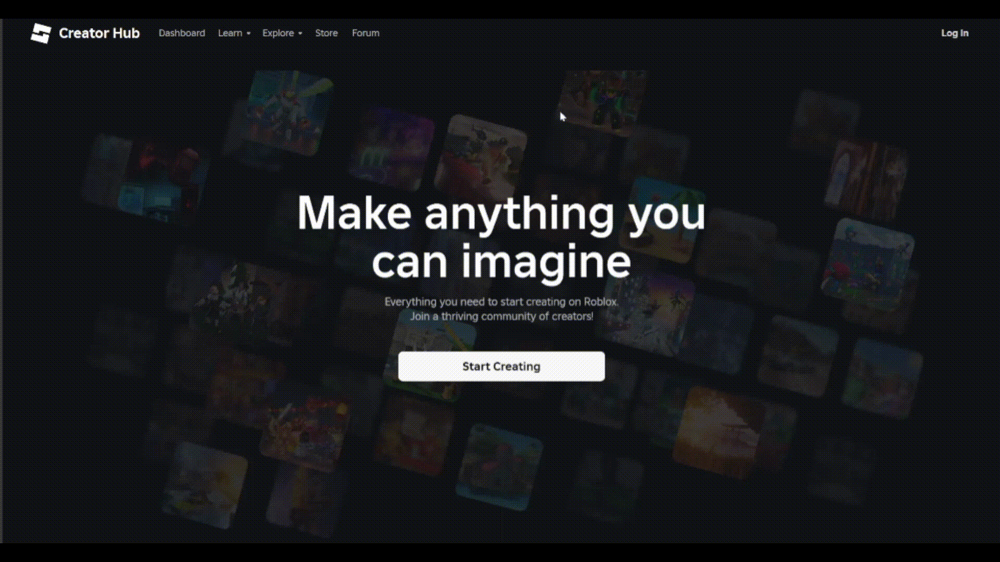
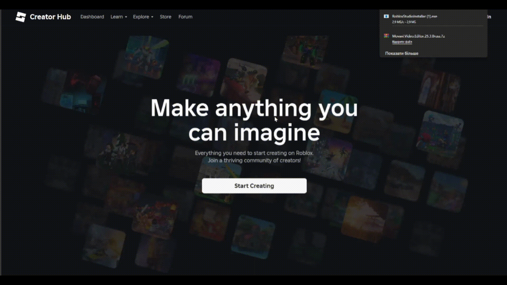
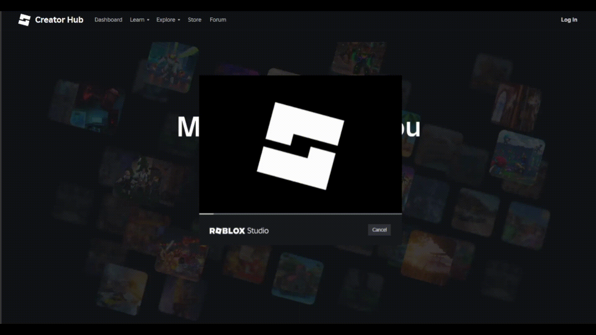
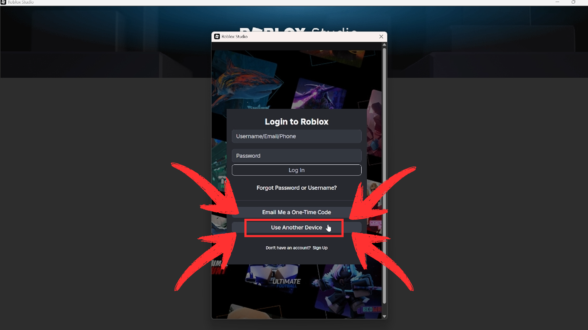
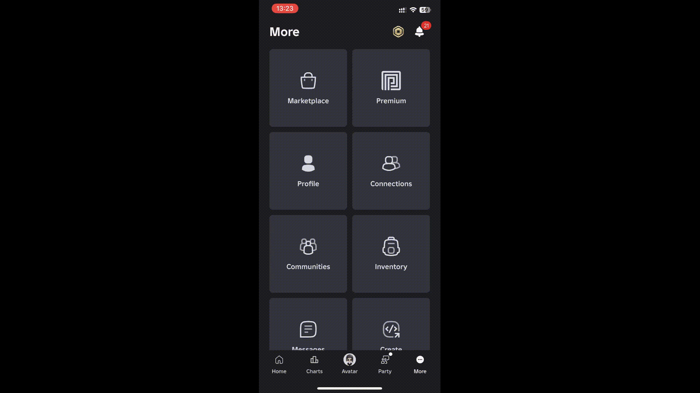
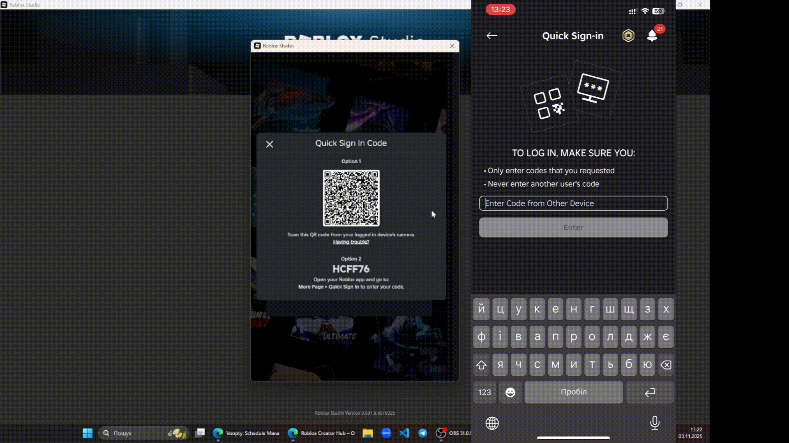

Перейдіть на сайт Roblox Studio, натисніть на кнопку
Start Creating, щоб почати створення. Цей крок
дозволить вам завантажити Roblox Studio на ваш комп'ютер.

Дочекайтеся, поки файл завантажиться, та відкрийте
його після завантаження. Інсталятор Roblox Studio автоматично
відкриється.

Дочекайтесь завершення встановлення Roblox Studio на
ваш комп'ютер.

Натисніть на кнопку Use Another Device на
екрані вашого комп'ютера. Цей крок дозволить вам увійти в Roblox за
допомогою телефону або планшета.

Відкрийте Roblox на вашому телефоні або планшеті та перейдіть до
вкладки More
— три крапки в нижньому правому кутку екрана.
Прогорніть вниз та натисніть Quick Sign In, щоб продовжити вхід на новому пристрої.

Код який ви бачите на комп'ютері потрібно ввести у поле введення на
телефоні чи планшеті
та натиснути кнопку Confirm login.

Готово! Тепер ви успішно увійшли в Roblox Studio та
можете почати створювати свої ігри.